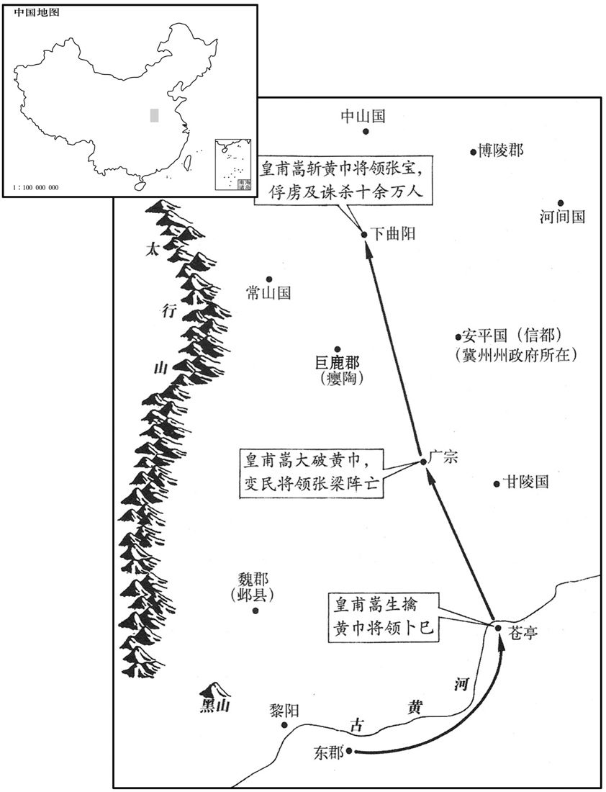

公元184年资治通鉴：本年记事、原文与白话对照
按原书编年位置阅读；追叙和史论不等于本年发生的事件。白话采用所据译本，缺译不以生成译文补齐。
卷58 · 本年记事
公元184年 · 汉孝灵皇帝中平元年
中平元年〔（甲子、一八四）是年十二月改元。〕
本年事件索引（现代整理）
- 唐周告发黄巾起事，马元义被车裂，张角提前举兵
- 何进任大将军，京师设置八关防卫
- 皇甫嵩、吕强建议解除党禁、整顿官吏，灵帝照办
- 灵帝宠信张让、赵忠等宦官，封谞、徐奉通黄巾事发后反推罪于王甫、侯览
- 向栩、张钧揭露宦官与黄巾关系，反遭杀害
- 张曼成攻杀南阳太守褚贡
- 杨赐直谏黄巾之乱，触怒灵帝被免
- 张温任司空
- 波才击败朱儁，皇甫嵩退守长社
- 黄巾军在汝南、广阳等地击败官军并杀刺史、太守
- 皇甫嵩用火攻大破长社黄巾，曹操率军助战
- 曹操受桥玄、何颙赏识，许劭评其为乱世奸雄
- 傅燮进谏除宦官以绝内乱根源，未获封赏
- 秦颉击斩张曼成
- 贾琮整顿交趾赋役、安抚百姓，平息叛乱
- 皇甫嵩、朱儁平定汝南、陈国黄巾，分别奉命出征
- 左丰诬告卢植，灵帝将其征回下狱
- 张修以五斗米道聚众反叛
- 皇甫嵩擒获黄巾首领卜巳，奉命接替董卓
- 安平王刘续因罪被诛，封国撤除
- 李燮反对复封刘续，因直言获罪后又得复职
- 皇甫嵩夜袭广宗，击杀张梁并剖棺戮张角；再破张宝
- 北宫伯玉等羌胡叛乱，杀护羌校尉泠征
- 盖勋劝梁鹄勿因私怨杀苏正和
- 盖勋屡劝左昌救援金城，率军驰援解冀县之围
- 盖勋兵败被羌人俘获，因忠勇获释
- 朱儁久攻宛城不克，击杀黄巾首领赵弘
- 朱儁拒绝受降韩忠，解围诱敌后将其击溃
- 朱儁、孙坚攻克宛城，平定南阳黄巾
- 大赦，改元中平
- 王允揭发张让与黄巾交通，遭构陷下狱后获救
春，角子济南唐周上书告之。〔济，子礼翻。考异曰：袁纪云「济阴人唐客」，今从范书。〕于是收马元义，车裂于雒阳。〔考异曰：袁纪曰：「五月乙卯，马元义等于京都谋反，伏诛。」今从范书。〕诏三公、司隶按验宫省直卫及百姓有事角道者，诛杀千余人；下冀州逐捕角等。〔下，遐稼翻。〕角等知已露，晨夜驰敕诸方，一时俱起，皆着黄巾以为标帜，〔着，陟略翻。帜，尺志翻，又音志。〕故时人谓之「黄巾贼」。二月，角自称天公将军，角弟宝称地公将军，宝弟梁称人公将军，〔考异曰：司马彪九州岛春秋云：「角弟梁，梁弟宝」，袁纪云「角弟良、宝」，今从范书。〕所在燔烧官府，劫略聚邑，〔聚，才喻翻。〕州郡失据，长吏多逃亡；〔长，知两翻。〕旬月之间，天下响应，京师震动。安平、甘陵人各执其王应贼。
春季，张角的弟子济南人唐周上书告密。于是，朝廷逮捕了马元义，在洛阳用车裂的酷刑将他处死。灵帝下诏，命令三公和司隶校尉调查皇宫及朝廷官员、禁军将士和普通百姓中信奉张角“太平教”者，处死了一千余人。同时还下令让冀州的官员捉拿张角等人。张角等得知计划已经泄露，便派人昼夜兼程赶往各地，通知各方首领，一时间各方全都起兵，他们个个头戴黄巾作为标志，因此当时人称他们为“黄巾贼”。二月，张角自称天公将军，他弟弟张宝称地公将军，张梁称人公将军。他们焚烧当地官府，劫掠城镇。州郡官员无力抵抗，大多弃职逃跑。不过一个月的时间，天下纷纷响应，京城洛阳为之震动。安平国和甘陵国的人民分别生擒了安平王和甘陵王，响应黄巾军。
三月，戊申，以河南尹何进为大将军，封慎侯，〔慎县，属汝南郡。〕率左、右羽林五营营土屯都亭，修理器械，以镇京师；置函谷、太谷、广成、伊阙、轘辕、旋门、孟津、小平津八关都尉。
三月，戊申（初三），任命河南尹何进为大将军，并封他为慎侯。何进统率左、右羽林军以及屯骑、步兵、越骑、长水、射声等五营将士，驻扎在都亭，整修军械，守卫京城洛阳。还设置了函谷关、太谷关、广成关、伊阙关、辕关、旋门关、孟津关、小平津关等八关都尉。
帝召群臣会议。北地太守皇甫嵩以为宜解党禁，益出中藏钱、西园貛马以班军士。〔藏府令，属少府，宦者为之。中藏钱，汉所谓禁公也。西园貛马，即騄骥貛马。藏，徂浪翻。〕嵩，规之兄子也。上问计于中常侍吕强，对曰：「党锢久积，人情怨愤，若不赦宥，轻与张角合谋，为变滋大，悔之无救。今请先诛左右贪浊者，大赦党人，料简刺史、二千石能否，〔料，音聊，量也，度也。〕则盗无不平矣。」帝惧而从之。壬子，赦天下党人，还诸徙者；〔谓党人妻子徙边者也。〕唯张角不赦。发天下精兵，遣北中郎将卢植讨张角，〔汉有三署中郎将，五官及左、右署。又有使匈奴中郎将。北中郎将则创置于此时，盖以讨河北黄巾也。〕左中郎将皇甫嵩、右中郎将朱讨颍川黄巾。
灵帝召集群臣商议对策。北地郡太守皇甫嵩认为，应该解除禁止党人作官的禁令，并拿出皇帝私人所有的中藏府钱财以及西园骥厩中的良马，赏赐给出征的将士。皇甫嵩是皇甫规哥哥的儿子。灵帝询问中常侍吕强的意见，吕强说：“对党人的禁令时间已经很长了，人心怨恨愤怒，若不予以赦免，他们将轻举妄动，与张角联合起来，叛乱之势便会更趋扩大，到那时，后悔就来不及了。现在，请先将陛下左右贪赃枉法的官员处死，大赦所有的党人，并考察各地刺史、郡守的能力。如果这样做，叛乱就不会不平息了。”灵帝对黄巾军的势力感到害怕，接受了吕强的建议。壬子（初七），大赦天下党人，已经被流放到边疆地区的党人及其家属都可以重返故乡，唯有张角不在赦免范围之内。与此同时，征调全国各地的精兵，派遣北中郎将卢植征讨张角，左中郎将皇甫嵩、右中郎将朱俊征讨在颍川地区活动的黄巾军。
是时中常侍赵忠、张让、夏恽、郭胜、段珪、宋典等皆封侯贵宠，〔夏，户雅翻。恽，于粉翻。〕上常言：「张常侍是我公，赵常侍是我母。」由是宦官无所惮畏，并起第宅，拟则宫室。上尝欲登永安候台，〔据续汉志：永安宫在北宫东北，宫中有候台。洛阳宫殿名曰：永安宫，周回六百九十八丈，故基在洛阳故城中。〕宦官恐望见其居处，乃使中大人尚但谏曰：〔贤曰：尚，姓；但，名。姓谱：师尚父之后。后汉有尚士、尚子平。〕「天子不当登高，登高则百姓虚散。」上自是不敢复升台榭。〔观灵帝以尚但之言不敢复升台榭，诚恐百姓虚散也，谓无爱民之心可乎！使其以信尚但者信诸君子之言，则汉之为汉，未可知也。贤曰：春秋潜潭巴曰：天子毋高台榭，高台榭则下叛之。盖因此以诳帝也。复，扶又翻；下同。〕及封谞、徐奉事发，上诘责诸常侍曰：〔诘，去吉翻。〕「汝曹常言党人欲为不轨，皆令禁锢，或有伏诛者。今党人更为国用，汝曹反与张角通，为可斩未﹖皆叩头曰：「此王甫、侯览所为也！」于是诸常侍人人求退，各自征还宗亲、子弟在州郡者。
当时，中常侍赵忠、张让、夏恽、郭胜、段、宋典等都被封为侯爵，身份贵宠。灵帝常说：“张常侍是我父亲，赵常侍是我母亲。”于是，宦官无所忌惮，纷纷大兴土木，仿照皇宫的式样修建宅第。一次，灵帝曾想登上永安宫的望台，观看皇宫周围的景致。宦官们生怕灵帝看到自己的宅第，便让中大人尚但劝阻灵帝，说：“天子不应当登高，登高则会使人民流散。”灵帝从此不再敢登较高的楼台亭榭。及至封、徐奉为张角做内应的事情败露，灵帝斥责诸位常侍说：“你们常说党人图谋不轨，将他们全都禁锢起来，有人甚至遭到诛杀。现在党人倒是在为国家出力，你们反与张角勾结，该不该处斩？”宦官们都叩头说：“这些都是王甫、侯览干的。”于是，诸位常侍都收敛退避，各自将他们在外担任州、郡官员的亲属及子弟召回。
侍中河内向栩上便宜，讥刺左右。〔栩，况羽翻。上，时掌翻；下同。〕张让诬栩与张角同心，欲为内应，收送黄门北寺狱，杀之。郎中中山张钧上书曰：「窃惟张角所以能兴兵作乱，万民」所以乐附之者，〔乐，音洛。〕其源皆由十侍多放父兄、子、弟婚亲、宾客典据州郡，辜榷财利，〔榷，古岳翻。〕侵掠百姓，百姓之冤，无所告诉，故谋议不轨，聚为盗贼。宜斩十常侍，县头南郊，以谢百姓，〔据宦者传，是时张让、赵忠、夏恽、郭胜、孙璋、毕岚、栗嵩、段珪、高望、张恭、韩悝、宋典十二人，皆为中常侍。言十常侍，举大数也。县，读曰悬。考异曰：范书宦者传上列常侍十二人名，而下云十常侍。未详。〕遣使者布告天下，可不须师旅而大寇自消。」帝以钧章示诸常侍，皆免冠徒跣顿首，乞自致雒阳诏狱，并出家财以助军费。有诏，皆冠履视事如故。帝怒钧曰：「此真狂子也！十常侍固当有一人善者不！」〔不，俯九翻。〕御史承旨，遂诬奏钧学黄巾道，收掠，死狱中。〔掠，音亮。〕
侍中、河内人向栩向灵帝上书，抨击宦官。张让便诬告向栩与张角同心，要做张角的内应。于是向栩被捕，送交黄门北寺监狱处死。郎中、中山人张钧上书说：“我认为，张角所以能够兴兵作乱，百姓所以乐于归附张角，原因都在于十常侍多放任自己的父兄、子弟、亲戚及其投靠者充任州郡长官，搜刮财富，掠夺百姓。百姓有冤无处申诉，这才打算与朝廷对抗，聚集起来成为盗贼。应该斩杀十常侍，将他们的头悬挂在京城南郊，向百姓谢罪，并派使者向全国宣布此事。这样，可以不出动军队镇压，庞大的寇盗集团就会自行解散。”灵帝将张钧的奏章交诸常侍看，这些人全都吓得摘下帽子，除去鞋袜，下跪叩头，请求灵帝允许他们到洛阳专门审理皇帝亲自交办案件的诏狱去投案自首，并将家产献出，用以补助军费。灵帝下诏，令诸常侍全都穿戴起表示官位的衣帽鞋袜，继续担任原职。他对张钧上奏一事发怒说：“这真是个狂人！难道十常侍中本不该有一个好人！”御史顺承灵帝的心意，诬奏张钧信奉黄巾道，遂将他逮捕入狱，拷打致死。
庚子，南阳黄巾张曼成攻杀太守褚贡。
庚子（疑误），南阳郡的黄巾军将领张曼成进攻并杀死太守褚贡。
帝问太尉杨赐以黄巾事，赐所对切直，帝不悦。夏，四月，赐坐寇贼免。以太仆弘农邓盛为太尉。已而帝阅录故事，得赐与刘陶所上张角奏，乃封赐为临晋侯，〔临晋县，属冯诩。贤曰：故城在今同州朝邑县西南。上，时掌翻。〕陶为中陵乡侯。
灵帝询问太尉杨赐有关黄巾军的情况，杨赐的回答恳切直率，灵帝感到不快。夏季，四月，杨赐因未能平息黄巾叛乱而被免职。任命太仆、弘农人邓盛为太尉。过了一些时候，灵帝翻阅过去的奏章，发现了杨赐与刘陶所上的有关张角的奏章。于是，封杨赐为临晋侯，刘陶为中陵乡侯。
司空张济罢；以大司农张温为司空。
司空张济被免职。任命大司农张温为司空。
皇甫嵩、朱儁合将四万余人〔将，即亮翻。〕共讨颖川，〔【张：「川」下脱「黄巾」二字。】〕嵩、各统一军。与贼波才战，败；嵩进保长社。〔长社县，属颍川郡。贤曰：今许州县，故城在长葛县西。〕
皇甫嵩、朱俊率军四万人，一同讨伐颍川郡的黄巾军。皇甫嵩和朱俊各率一支军队，朱俊与黄巾军将领波才交战，被击败。皇甫嵩率军进驻长社，固守县城。
汝南黄巾败太守赵谦于邵陵。〔邵陵县，属汝南郡。贤曰：故城在今豫州郾陵县东。败，补迈翻。〕广阳黄巾杀幽州刺史郭勋及太守刘卫。
汝南郡的黄巾军在邵陵击败太守赵谦所率的官军。广阳郡的黄巾军杀幽州刺史郭勋及太守刘卫。
波才围皇甫嵩于长社。嵩兵少，〔少，诗沼翻。〕军中皆恐。贼依草结营，会大风，嵩约敕军士皆束苣乘城，〔贤曰：苣，音巨。说文云：束苇烧之。〕使锐士间出围外，纵火大呼，〔间，古苋翻。呼，火故翻。〕城上举燎应之，嵩从城中鼓噪而，出奔击贼陈，〔陈，读曰阵。〕贼惊，乱走。会骑都尉沛国曹操将兵适至，五月，嵩、操与朱儁合军，更与贼战，大破之，斩首数万级。封嵩都乡侯。
波才率黄巾军将皇甫嵩围困在长社县城。皇甫嵩兵少，军中都感到恐慌。黄巾军的营寨所设之处荒草遍野，适逢狂风大作，皇甫嵩让士兵们全都手持成束苇草上城。另命一批勇士，偷偷地越过包围圈，放火烧草并高声呐喊。与此同时，城上的军士也一齐点燃火把，与之呼应。皇甫嵩率军从城中擂鼓呐喊而出，直捣敌阵。黄巾军大惊，溃散奔逃。这时，恰好骑都尉、沛国人曹操率兵赶到。五月，皇甫嵩、曹操与朱俊会师，再次出战，大败黄巾军，斩杀数万人。灵帝封皇甫嵩为都乡侯。
操父嵩，为中常侍曹腾养子，不能审其生出本末，或云夏侯氏子也。〔吴人作曹暪传乃郭颁世语，并云嵩，夏侯氏之子，夏侯惇之叔父，操于惇为从父兄弟。〕操少机警，有权数，而任侠放荡，不治行业；〔少，诗照翻。行，下孟翻；下同。〕世人未之奇也，唯太尉桥玄及南阳何颙异焉。〔颙，鱼容翻。〕玄谓操曰：「天下将乱，非命世之才，不能济也。能安之者，其在君乎！」颙见操，叹曰：「汉家将亡，安天下者，必此人也。」玄谓操曰：「君未有名，可交许子将。」子将者，训之从子劭也，〔许劭，字子将。许训为公，见上卷熹平三年、四年。从，才用翻。〕好人伦，多所赏识，与从兄靖俱有高名，好共核论乡党人物，每月辄更其品题，故汝南俗有月，日评焉。〔后置州邵中正本于此。好，呼到翻。更，工衡翻。〕尝为郡功曹，府中闻之，莫不改操饰行。曹操往造劭而问之〔造，七到翻。〕曰：「我何如人﹖」劭鄙其为人，不答。操乃劫之，劭曰：「子，治世之能臣，乱世之奸雄。」〔言其才绝世也。天下治则尽其能为世用，天下乱则逞其智为时雄。〕操大喜而去。〔曹操事始此。〕
曹操的父亲曹嵩，是中常侍曹腾的养子，他原来的姓氏已无法确定，据传为夏侯氏。曹操自小为人机警，有谋略，善权术，并喜欢行侠仗义，行为放荡，不经营家产事业。因此，当时人认为他并无什么过人之处。唯有太尉桥玄和南阳人何对他另眼相看。桥玄对他说：“天下即将大乱，不是掌握时代命运的杰出人才，不能拯救。能够平息这场大乱的人，恐怕就是你吧。”何看到曹操后叹息说：“汉朝就要灭亡，能够重新安定天下的，一定是此人。”桥玄向曹操建议说：“你在世上尚无名气，可以与许子将结交。”许子将就是许训的侄子许劭。许劭善于待人接物，能够辨别人的品行和能力，与他的堂兄许靖都有很高的名望。两人喜欢一起评论本地的知名人士，并根据这些人士的所作所为，逐月更改评语和排列顺序。为此，汝南人称之为“月旦评”。许劭曾经担任过郡府中管理人事的功曹，府中官员听说了他的名望，无不改变、修饰自己的操行，以求得到一个较好的评语，曹操前去拜访许劭，询问他对自己的评价，说：“我是一个什么样的人呢？”许劭鄙视曹操的为人，故闭口不答。曹操于是加以威胁，许劭才说：“你在天下太平时可以成为一个能臣，在天下大乱时则会成为一个奸雄。”曹操听后，大喜而去。
朱儁之击黄巾也，其护军司马北地傅燮上疏曰：〔护军司马，官为司马，而使监护一军。〕「臣闻天下之祸不由于外，皆兴于内。是故虞舜先除四凶，然后用十六相，〔尚书：舜流共工于幽州，放驩兜于崇山，窜三苗于三危，殛鲧于羽山，四罪而天下咸服。左传曰：高阳氏有才子八人，苍舒、隤敳、梼戭、大临、厖降、庭坚、仲容、叔达、谓之八元。高辛氏有才子八人，伯奋、仲堪、叔献、季仲、伯虎、仲熊、叔豹、季狸，谓之八恺。舜臣尧，流四凶族，举十六相。〕明恶人不去，则善人无由进也。今张角起于赵、魏，黄巾乱于六州，此皆衅发萧墙而祸延四海者也。臣受戎任，奉辞伐罪，始到颍川，战无不克；黄巾虽盛，不足为庙堂忧也。臣之所惧，在于治水不自其源，末流弥增其广耳。」〔治，直之翻。〕陛下仁德宽容，多所不忍，故阉竖弄权，忠臣不进。诚使张角枭夷，黄巾变服，〔谓其党归顺，去其黄巾而复服时人之服也。枭，坚尧翻。枭夷，谓枭斩而诛夷之。〕臣之所忧，甫益深耳。何者﹖夫邪正之人不宜共国，亦犹冰炭不可同器。彼知正人之功颢而危亡之兆见，皆将巧辞饰说，共长虚伪。〔见，贤遍翻。长，知两翻。〕夫孝子疑于屡至，〔即曾母投杼，事见三卷周赧王七年。〕市虎成于三夫，〔韩子：庞共与魏太子质于鄞郸。共谓魏王曰：「今一人言市有虎，王信乎﹖」王曰：「否。」「二人言，信乎﹖」王曰：「否。」「三人言，信乎﹖」王曰：「寡人信矣。」共曰：「夫市无虎明矣，然三人言诚市有虎。今邯郸去魏远于市，谤臣者过三人，愿王熟察之！」〕若不详察真伪，忠臣将复有杜邮之戮矣！〔白起事见五卷周赧五十八年。复，扶又翻。邮，音尤。〕陛下宜思虞舜四罪之举，速行谗佞之诛，则善人思进，奸凶自息。」赵忠见其疏而恶之。〔恶，乌路翻。〕燮击黄巾，功多当封，忠谮诉之；帝识燮言，〔贤曰：识，记也，音志。〕得不加罪，竟亦不封。
朱俊进攻黄巾军时，他的护军司马、北地人傅燮上书说：“我听说，天下的灾祸不是来源于外部，而全是起因于内部。正因如此，虞舜先除去四凶，然后才任用十六位贤能之士铺佐自己治理天下。这说明，恶人不除，善人就不可能取得权力。如今张角在赵、魏之地起兵，黄巾军在六州作乱，这场大乱的根源是在宫廷之内，蔓延到四海。我受陛下的委任，奏命率军讨伐叛乱。从颍川开始，一直是战无不胜。黄巾军势力虽大，并不足以使陛下担忧。我所恐惧的是，如果治理洪水不从源头治起，下游势必泛滥得更加严重。陛下仁爱宽容，对许多不对的事情不忍处理，因此宦官们控制了朝政大权，忠臣不能得到重用。即使真将张角砍头处死，平息了黄巾叛乱，我的忧虑会更深。为什么呢？这是因为，邪恶小人与正人君子不能在朝廷共存，如同寒冰与炽炭不能放入一个容器一样。那些邪恶之辈明白，正直之士的成功，预示着他们行将灭亡，因此必然要花言巧语，共同弄虚作假。传播假消息的人多了，即使是曾参那样的孝子也难免遭受怀疑；市中明明没有老虎，但只要有三个人说有，人们就会相信。假如陛下不能详细辨察真伪，那么忠臣就会再次像秦国名将白起那样含冤而死了！陛下应该深思虞舜对四凶的处理，尽速诛杀那些善进谗言的佞臣，这样，善人就会愿意为朝廷尽力，叛乱自会平息。”赵忠看到这份奏章，感到厌恶。傅燮征讨黄巾军立下很多战功，应得到封爵的赏赐，赵忠便向灵帝讲傅燮的坏话。灵帝记得傅燮奏章所言，没有对傅燮加罪，但到底也没有封他。
张曼成屯宛下百余日：〔宛，于元翻。〕六月，南阳太守秦颉击曼成，斩之。
黄巾将领张曼成驻军宛城城下一百多天。六月，阳太守秦颉进攻黄巾军，斩杀张曼成。
交趾土多珍货，前后刺史多无清行，〔行，下孟翻。〕财计盈给，辄求迁代，故吏民怨叛，执刺史及合浦太守来达，自称柱天将军。三府选京令东郡贾琮为交趾刺史。〔京县，属河南尹。琮，祖宗翻。〕琮到部，讯其反状，咸言「赋敛过重，〔敛，力赡翻。〕百姓莫不空单。京师遥远，告冤无所，民不聊生，故聚为盗贼。」琮即移书告示，各使安其资业，招抚荒散，蠲复傜役，〔蠲，吉玄翻。复，音方目翻，除也。〕诛斩渠帅为大害者，〔帅，所类翻。〕简选良吏试守诸县，岁间荡定，百姓以安。巷路为之歌曰：「贾父来晚，使我先反；今见清平，吏不敢饭！」〔言吏不敢过民家而饭也。饭，扶晚翻。〕
交趾地区盛产珍珠等宝物，先后担任刺史的官员多无清谦行为，算计财物搜刮够了，便要求调任，因此下层官吏及百姓因愤恨而起来反抗，俘虏刺史及合浦太守来达，其首领自称为“柱天将军”。三府选用京县县令、东郡人贾琮任交趾刺史。贾琮到任后，调查叛乱的原因，人们都说：“官府征收的赋税太重，百姓无不被搜刮一空。京城洛阳过于遥远，无处诉冤。民不聊生，只好聚在一起做盗贼。”贾琮便发布文告，让百姓自安居生产，招抚流亡在外的饥民返乡，免除徭役，将为害大的盗贼首领斩杀，选派清廉干练的官吏担任属下各县的代理县长。一年之间，叛乱全被平定，百姓得以安居。大街小巷的人们歌颂贾琮：“贾父来得晚，使我先造反；如今见清平，吏不敢派饭！”
皇甫嵩、朱儁乘胜进讨汝南、陈国黄巾，追波才于阳翟，击彭脱于西华，〔姓谱：波，姓也。其先事王莽为波水将军，子孙以为氏。阳翟县，属颍川郡。西华县，属汝南郡。贤曰：西华故城，在今陈州项城县西；又曰，在今冢水县西北。〕并破之，余贼散，〔降，户江翻。〕三郡悉平。嵩乃上言其状，以功归，于是进封西乡侯，迁镇贼中郎将。〔此因欲镇安黄巾余贼而置官。〕诏嵩讨东郡，讨南阳。
皇甫嵩、朱俊乘胜进攻在汝南郡和陈国的黄巾军，在阳翟追击黄巾将领波才，在西华攻打黄巾军另一将领彭脱，都取得了胜利。黄巾军的剩余部众或者投降，或者逃散，三郡的叛乱被全部平定。皇甫嵩上书报告作战情况，将功劳归于朱俊。于是朝廷进封朱俊为西乡侯，提升为镇贼中郎将。灵帝下诏，命令皇甫嵩讨伐东郡的黄巾军，朱俊计伐南阳的黄巾军。
北中郎将卢植连战破张角，斩获万余人，角等走保广宗。〔广宗县，属巨鹿郡。贤曰：今贝州宗城县。〕植筑围凿堑，造作云梯，垂当拔之。〔垂，几也。堑，七艳翻。〕帝遣小黄门左丰视军，或劝植以赂送丰，植不肯。丰，还言于帝曰：「广宗贼易破耳，〔，易，以鼓翻。〕卢中郎固垒息军，以待天诛。」帝怒，槛车征植，减死一等；遣东中郎将陇西董卓代之。〔卢植先为北中郎将，卓为东中郎将。四中郎将始于此。〕
北中郎将卢植率军连续战败张角，斩杀和俘虏黄巾军一万余人，张角等退保广宗县城。卢值率军将广宗城包围，修筑长墙，挖掘壕沟，制造攻城用的云梯，马上就要攻下广宗城。恰在此时，灵帝派小黄门左丰到卢植军中视察。有人劝卢植贿赂左丰，卢植不肯。左丰回到洛阳，对灵帝说：“据守广宗的贼寇很容易攻破，然而卢植只是让军队躲在营垒里休息，等待上天诛杀张角。”灵帝大怒，派人用囚车将卢植押解回洛阳，判处比死罪轻一等的处分。派东中郎将、陇西人董卓代替卢植任职。
巴郡张修以妖术为人疗病，〔为，于伪翻。〕其法略与张角同，令病家出五斗米，号「五斗米师」。秋，七月，修聚众反，寇邵县；时人谓之「米贼」。〔考异曰：范书灵帝纪有此张修。陈寿魏志张鲁传「有刘焉司马张修」，刘艾典略有「汉中张修」，裴松之以为「张修」应是「张衡」，非典略之失，则传写之误。案鲁传云：「祖父陵，父衡、皆为五斗米道。衡死，鲁复行之。」刘焉司马张修与鲁同击汉中，鲁袭杀修，非其父也。今此据范书。〕
巴郡人张用法术为人治病，所用方法大致与张角相同。他治病时，让病家出五斗米，因此号为“五斗米师”。秋季，七月，张聚众起来造反，攻打郡、县，当时人称他们为“米贼”。
八月，皇甫嵩与黄巾战于苍亭，〔苍亭，在东郡范县界，〕获其帅卜巳。〔帅，所类翻。〕董卓攻张角无功，扺罪，乙巳，诏嵩讨角。
八月，皇甫嵩与黄巾军在苍亭大战，俘虏黄巾军将领卜巳。董卓进攻张角，未能取胜，受到处分。乙巳（初三），灵帝下诏，命皇甫嵩率军征讨张角。
九月，安平王续坐不道，诛，〔安帝延光元年，改乐成国曰安平，以孝王得绍封。续，得子也。〕国除。
九月，安平王刘续被指控为大逆不道，处死，封国撤销。
初，续为黄巾所虏，国人赎之得还，朝廷议复其国。议郎李燮曰：「续守藩不称，〔称，尺证翻。〕损辱圣朝，不宜复国。」朝廷不从。燮坐谤毁宗室，输作左校；〔校，户教翻。〕未满岁，王坐诛，乃复拜议郎。京师为之语曰：「父不肯立帝，〔谓李固不肯立质、桓二帝也。〕子不肯立王。」
当初，刘续被黄巾军所俘，安平国人将他赎回。朝廷进行讨论，打算恢复他的封国。议郎李燮提出：“刘续身为一个藩王，不仅没有尽到职责，损害了朝廷的声誉，不该让他恢复封国。”朝廷没有听从李燮的意见。李燮被指控为诽谤宗室，送到左校去服苦役。不到一年，安平王刘续因罪被处死，李燮才被释放，重新任议郎。京城洛阳人将此事与其父李固不肯立质帝、桓帝事联系在一起，称颂说：“父不肯立帝，子不肯立王。”
冬，十月，皇甫嵩与张角弟梁战于广宗，梁众精勇，嵩不能克；明日，乃闭营休士以观其变，知贼意稍懈，〔懈，居隘翻。〕乃潜夜勒兵，鸡鸣，驰赴其陈，〔陈，读曰阵。〕战至晡时，大破之，斩梁，获首三万级，赴河死者五万许人。角先已病死，剖棺戮尸，传首京师。十一月，嵩复攻角弟宝于下曲阳，斩之，〔下曲阳县，属巨鹿郡；以常山有上曲阳，故此称下。复，扶又翻。〕斩获十余万人。即拜嵩为左车骑将军，领冀州牧，封槐里侯。嵩能温恤士卒，每军行顿止，须营幔修立，然后就舍，军士皆食，尔乃尝饭，〔尔，如此也。〕故所向有功。
冬季，十月，皇甫嵩与张角的弟弟张梁交战于广宗，张梁率领的黄巾军骁勇善战，皇甫嵩未能取胜。第二天，皇甫嵩关闭营门，让士兵休息，以观察敌军的变化。看到黄巾军情绪逐渐松懈，便趁夜部署军队，清晨鸡鸣之时，疾驰冲向敌阵。交战至傍晚时，黄巾军大败，张梁被斩首，黄巾军三万多人被杀，约五万人被逼落河中淹死。张角在此之前已经病故，他的棺材被剖开，乱刀碎尸，头颅被送到洛阳。十一月，皇甫嵩又在下曲阳进攻张角的弟弟张宝，张宝被斩杀，黄巾军被杀、被俘共十余万人。灵帝闻讯大喜，立即任命皇甫嵩为左车骑将军，兼冀州牧，并封为槐里侯。皇甫嵩能够体恤士兵，每次行军休息时，总是等到营帐全部修好，他才去休息，士兵全都吃上饭，他才去吃。所以能够所向无敌，建立功勋。

北地先零羌枹罕、河关群盗反，〔河关、枹罕二县，皆属陇西郡。零，音怜。枹，音肤。〕共立湟中义从胡北宫伯玉、李文侯将军，〔北宫，以所居为氏。左传有卫大夫北宫文子。孟子有北宫黝。从，才用翻。〕杀护羌校尉泠征。〔贤曰：泠，姓也，周有泠州鸠，音零。〕金城人边章、韩遂素著名西州，群盗诱而劫之，使专任军政，〔诱，音酉。任，音壬。杀金城太守陈懿，攻烧州郡。〕
两版字句有差异，建议核对原文。
北地郡羌族的先零部落及罕、河关两地的盗贼起来反抗，共同拥立湟中的义勇首领胡人北宫伯玉和李文侯为将军，杀死护羌校尉泠征。金城人边章、韩遂在西州素有盛名，起事者将其诱骗来，武力胁迫他们主持军政事务，杀死金城太守陈懿，攻打焚烧州郡官府。
初，武威太栽倚恃权贵，恣行贪暴，〔武威太守，史失其姓名。〕凉州从事武都苏正和案致其罪。刺史梁鹄惧，欲杀正和以免其负，访于汉阳长史敦煌盖勋。〔续汉志：郡太守置丞一人；郡当边戍者，丞为长史。敦，徒门翻。盖，徒盍翻。〕勋素与正和有仇，或劝勋因此报之，勋曰：「谋事杀良，非忠也；乘人之危，非仁也。」乃谏鹄曰：「夫绁食鹰隼，欲其鸷也。」〔贤曰：绁，系也。广雅曰：鸷，执也。取其能服执众鸟。隼，耸尹翻。食，读曰坔。〕鸷而亨之，〔亨，读作烹。〕将何用哉！」鹄乃止。正和诣勋求谢，勋不见，曰：「吾为梁使君谋，不为苏正和也。」〔为，于伪翻。〕怨之如初。
起初，武威郡的太守依仗权贵的势力，为所欲为，贪污残暴。凉州从事、武都人苏正和调查并举发了他的罪行。凉州刺史梁鹄感到害怕，想杀死苏正和，以免牵连自己，于是去征求汉阳郡长史、敦煌人盖勋的意见。盖勋一向与苏正和有仇，有人劝盖勋乘此机会进行报复，盖勋说：“借刺史向我征求意见的机会谋害人才，是不忠；乘人之危，是不仁。”他劝阻梁鹄说：“人们养猎鹰，是要用它捕捉猎物，如因猎鹰捕捉了猎物而将它煮杀，那么养它还有什么用呢？梁鹄便打消了杀苏正和的念头。苏正和听说此事后，前去拜访盖勋，向他致谢。盖勋避而不见，说：“我是为梁使君着想，并不是为了苏正和。”他对苏正和的仇恨丝毫未减，一如当初。
后刺史左昌盗军谷数万，勋谏之。昌怒，使勋与从事辛曾、孔常别屯阿阳以拒贼，〔阿阳县，属汉阳郡。〕欲因军事罪之；而勋数有战功。〔数，所角翻。〕及北宫伯玉之攻金城也，勋劝昌救之，昌不从。陈懿既死，边章等进围昌于冀，昌召勋等自救，辛曾等疑不肯赴，动怒曰：「昔庄贾后期，穰苴奋剑。〔齐景公时，燕、晋侵齐，景公以司马穰苴为将，御之，令宠臣庄贾监军。穰苴与期旦日会。贾素骄贵，夕时乃至。穰苴召军正问曰：「军法，期而后者云何﹖」对曰：「当斩。」遂斩贾以徇于三军。〕今之从事岂重于古之监军乎！」〔监，古衔翻。〕曾等惧而从之。勋至冀，诮让章等以背叛之罪；〔诮，才笑翻。背，蒲妹翻。〕皆曰：「左使君若早从君逜，以兵临我，庶可自改；今罪已重，不得降也。」乃解围去。
后来，刺史左昌偷盗军粮数万石，盖勋进行劝阻，左昌大怒，遂让盖勋与从事辛曾、孔常率军另驻阿阳抵抗盗贼，想借口盖勋作战不力而加罪于他。然而盖勋屡立战功，左昌无计可施。及至北宫伯玉攻打金城，盖勋劝左昌发兵援救，左昌没有听从他的意见。陈懿死后，边章等进军，在冀县包围左昌。左昌召盖勋等去救援，辛曾等人迟疑，不肯出兵。盖勋大怒说：“从前庄贾身为监军而延误军期，被司马穰苴处死，今天的从事难道比古时的监军还要尊贵吗？”辛曾等感到害怕，便听从他的主张，出兵援救。盖勋到达冀县后，用背叛的罪名斥责边章等人，边章等人都说：“假如左刺史早些听从您的意见，出兵对付我们，或许我们还能改过自新。如今罪过已重，不能归降了。”于是，撤除对冀县的包围离去。
叛羌围校尉夏育于畜官，〔前书尹翁归传有论罪输掌畜官。音义曰：右扶风，畜牧所在，有苑师之属，故曰：畜官。畜，音许救翻。〕勋与州郡合兵救育，至狐盘，〔晋时，秦苻生莽姚弋仲于孤盘。载记日：在天水冀县。〕为羌所败。勋余众不及百人，身被三创，〔败，补迈翻。被，皮义翻。创，初良翻。〕坚坐不动，指木表曰：「尸我于此！」句就种羌滇吾以兵扞众曰：〔贤曰：句就，羌别种。句，音古侯翻。种，章勇翻。滇，音颠。〕「盖长史贤人，汝曹杀之者为负天。」勋仰骂曰：「死反虏！汝河知，促来杀我！」众相视而惊。滇吾下马与勋，勋不肯上，〔上，时掌翻。〕遂为羌所执。羌服其义勇，不敢加害，送还汉阳。后剌史杨雍表勋领汉阳太守。
叛乱的羌族人将护羌校尉夏育围困在官府畜牧场。盖勋与州、郡联合出兵去救夏育。援军行进到狐，被羌族人打败。盖勋手下所剩不足一百人，身上三处负伤，但仍稳坐不动。他指着路边的木牌说：“就将我的尸体放在这里。”句就部落的羌人首领滇吾手执武器不许众人杀死盖勋，并说：“盖长史是一位贤人，你们如果将他杀死，就会得罪上天。”盖勋仰天大骂道：“该死的反叛羌人，你知道什么，赶快来杀我！”羌人都大吃一惊，面面相觑。滇吾下马让盖勋骑，盖勋不肯上马，于是被羌人俘虏。羌人钦佩他的仁义与勇敢，不敢加害，便将他送回汉阳。后来，凉州刺史的杨雍上表保举盖勋兼任汉阳太守。
张曼成余党更以赵弘为帅，众复盛，〔帅，所类翻；下同。复，扶又翻；下同。〕至十余万，据宛城。朱儁与荆州剌史徐璆等合兵围之，〔宛，于元翻。璆，渠尤翻。〕自六月至八月不拔；有司奏征儁。司空张温上疏曰：「昔秦用白起，燕任乐毅，皆旷年历载，乃能克敌。」〔史记：白起事秦昭王为大良造，攻魏，破之。后五年，攻赵，拔光狼城。后七年，攻楚，拔鄢、邓五城。明年，拔郢，烧夷陵，遂东至竟陵。乐毅事燕昭王，为上将军，伐齐，入临菑，徇齐五岁，下七十余城。〕儁讨颍川已有效，引师南指，方略已设；临军易将，〔将，即亮翻。〕兵家所忌，宜假日月，责其成功。」帝乃止。击弘，斩之。
黄巾将领张曼成被杀后，所余部众又拥立赵弘为统师，人数再度扩大，达到十余万，攻占了宛城。朱俊与荆州刺史徐等率军联合将宛城包围起来。从六月攻至八月，一直未能攻克。有关部门要求将朱俊调回。司空张温上书说：“从前秦国任用白起，燕国任用乐毅，都是经过长年艰苦奋战，才能战胜敌人。在征讨颍川黄巾时便已建立战功，挥师南下，已经确定作战计划；在战争之中更换统帅，是兵家的禁忌。应该再给一些时间，让他取得成功。”灵帝这才作罢。不久，朱俊发动进攻，将赵弘斩杀。
本段人物：乐毅
贼帅韩忠复据宛拒儁，儁鸣鼓攻其西南，贼悉众赴之；儁自将精卒掩其东北，乘城而入。忠乃退保小城，惶惧乞降；〔将，即亮翻；降，户江翻；并下同。〕诸将皆欲听之，儁曰：「兵固有形同而势异者。昔秦、项之际，民无定主，故赏附以劝来耳。今海内一统，唯黄巾造逆。纳降无以劝善，讨之足以惩恶。今若受之，更开逆意，贼利则进战，钝则乞降，纵敌长寇，〔长，知两翻。〕非良计也！」因急攻，连战不克。登土山望之，顾谓司马张超曰：「吾知之矣。贼今外围周固，内营逼急，乞降不受，欲出不得，所以死战也。万人一心，犹不可当，况十万乎！不如彻围，并兵入城，忠见围解，势必自出，自出则意散，破〔【章：甲十一行本「破」上有「易」字；乙十一行本同；孔本同；张校同。】〕之道也。」既而解围，忠果出战，儁因击，大破之，斩首万余级。
黄巾将领韩忠再次占据宛城抗拒朱俊。朱俊让士兵们敲着军鼓进攻宛城西南角，黄巾军全都赶赴该处抵御。朱俊却亲率精兵袭击宛城的东北角，登上城墙而入。韩忠退守小城，惊慌失措，要求投降。诸将都愿意接受，但朱俊说：“在军事上，本有形式相同而实质不同的情况，从前秦末项羽争霸的时候，人民没有确定的君主，因此要奖赏归附者，以鼓励人们前来归顺。如今天下统一，只有黄巾军起来造反，如果接受了他们的投降，就无法鼓励那些守法的百姓；而严厉镇压，就能惩罚罪犯。现在如果接受他们的投降，就会进一步助长叛军的势头，他们在有利时起兵进攻，不利时则请求投降。这是放纵敌人的作法，不是上策。”朱俊连续发起猛攻，未能攻克。他登上土山，观察黄巾军的情况，回头对司马张超说：“我知道原因了。现在叛军被严密围住，内部形势危急，他们求降不成，突围又无路可走，因而死战。万人一心，已是势不可挡，更何况十万人一心呢！不如撤除包围圈，集中兵力攻城。韩忠见到包围解除了，势必自己出来求生，自己出城定会各寻生路，斗志全消。这是破敌的最好办法。”于是朱俊解除包围，韩忠果然出战，朱俊乘势攻击，大破黄巾军，杀死一万余人。
南阳太守秦颉杀忠，余众复奉孙夏为帅，还屯宛。儁急攻之，司马孙坚率众先登；癸巳，拔宛城。孙夏走，儁追至西鄂精山，〔西鄂县，属南阳郡。贤曰：故城在今邓州向城县南；精山在其南。〕复破之，斩万余级。于是黄巾破散，其余州郡所诛，一郡数千人。
南阳太守秦颉杀死韩忠，剩下的黄巾军又推举孙夏为统帅，再次占领宛城。朱俊发起猛攻，司马孙坚率领部下首先登上城墙。癸巳（二十二日），攻下宛城。孙夏逃走，朱俊追至西鄂县的精山，再次击溃黄巾军，斩杀一万余人。黄巾军溃不成军。其他州、郡诛杀的黄巾余众，每郡数千人。
十二月，己巳，赦天下，改元。
十二月，己巳（二十九日），大赦天下，改年号为中平元年。
豫州刺史太原王允破黄巾，得张让宾客书，与黄巾交通，上之。〔上，时掌翻。〕上责怒让；让叩头陈谢，竟亦不能罪也。让由是以事中允，〔中，竹仲翻，中伤也。〕遂传下狱，〔贤曰：传，逮也。传，株恋翻。下，遐稼翻。〕会赦，还为刺史；旬日间，复以他罪被捕。〔被，皮义翻。〕杨赐不欲使更楚辱，〔贤曰：更，经也。楚，苦痛。更，工衡翻。〕遣客谢之曰：「君以张让之事，故一月再征，凶慝难量，〔量，音良。〕幸为深计！」〔贤曰：深计，谓令自死。〕诸从事好气决者，〔好，呼到翻。〕共流涕奉药而进之。允厉声曰：「吾为人臣，获罪于君，当伏大辟以谢天下，〔辟，毗翻。〕岂有乳药求死乎！」〔前书王嘉传：何谓咀药而死。乳，当作咀。〕投杯而起，出就槛车。既至，〔【章：甲十一行本「至」下有「廷尉」二字；乙十一行本同；孔本同；张校同；退齐校同。】〕大将军进与杨赐、袁隗共上疏请之，得减死论。〔考异曰：允传云「太尉袁隗、司徒杨赐」。按隗、赐时皆不为此官，恐误。〕
豫州刺史太原人王允打败黄巾军，从收缴物品中查出宦官首领张让门下的宾客与黄巾军往来联系的书信，便将这些信件上报朝廷。灵帝知道后大发雷霆，斥责张让。张让叩头请罪，灵帝竟也不再追究。于是张让寻机诬告王允，遂将王允逮捕入狱。恰巧赶上大赦，王允得以恢复原职。可是在十天之内又以别的罪名被捕。杨赐不愿让王允再遭受拷打的痛苦和羞辱，派人对王允说：“因为你揭发了张让，所以会一月之内再次被捕。张让凶恶无比，阴险难测，希望你好好考虑一下，是否还要再受折辱。”王允属下那些年轻气盛的从事们，泪流满面，一同将毒药进奉给王允。王允厉声说道：“我身为一个臣子，得罪了君王，理应由司法机构正式处死，以公告天下，怎么能服毒自杀呢！”于是摔掉药杯，奋然起身，出门登上囚车。他被押解到廷尉以后，大将军何进与杨赐、袁隗一起上书营救，王允才得以免死，被判处减死一等之罪。
译本中未与胡注本可靠对应的内容
以下另列供核对版本差异，不并入胡注本正文。
译本所附古文
赵忠、夏恽等遂共谮吕强，云与党人共议朝廷，数读《霍光传》。强兄弟所在并皆贪秽。帝使中黄门持兵召强。强闻帝召，怒曰：“吾死，乱起矣！丈夫欲尽忠国家，岂能对狱吏乎！”遂自杀。忠、恽复谮曰：“强见召，未知所问而就外自屏，有奸明审。”遂收捕其宗亲，没入财产。
译本白话
于是，赵忠、夏恽等人一同向灵帝诬告吕强，说：“吕强与党人一起议论朝廷，经常阅读《霍光传》，他的兄弟全都在官位上贪脏枉法。”灵帝听后，令中黄门带着兵器召吕强入宫。吕强得知灵帝召他的用意后，忿忿地说：“我死之后，必有大乱。大丈夫要为报国尽忠，怎能去面对狱吏呢！”便自杀了。赵忠、夏恽等再次诬陷说：“吕强被召，还不知道要问他什么事，就在外自杀了，这说明他确实有罪。”于是，灵帝下令逮捕吕强的亲属，将财产没收。